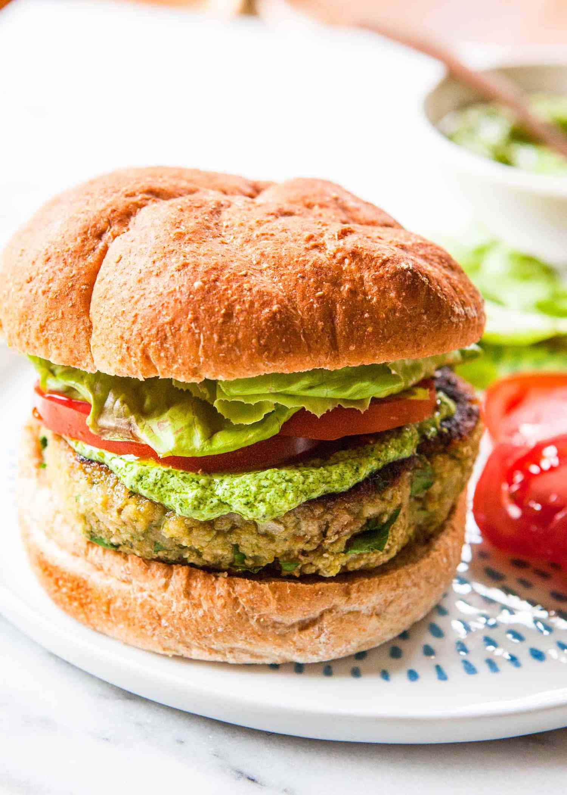

Vegan Pizza Burgers w/ Avocade Pesto

Description
These are vegan "pizza" burgers. Adeline likes them. They're tasty. You have to use the blender a lot.
Ingredients
Avocado Pesto
- 1 ripe avocado
- 1 garlic clove
- .5c packed fresh basil
- 1tbsp lemon juice
- .5tsp sea salt
- .25tsp freshly ground black pepper
- .25c water
Burgers
- 1 15oz can white beans, rinsed and drained
- 1 garlic clove
- .5c packed fresh basil
- .25c bread crumbs
- .25c all-purpose flour
- 1tsp sea salt
- .25tsp freshly ground black pepper
- 2tbsp olive oil
Misc.
- Burger Buns, toasted
- fresh basil
- tomato slices
- red onions, fresh and/or pickled
Steps